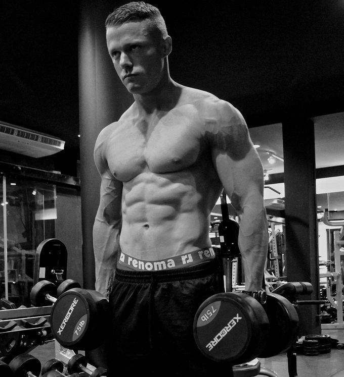

	
<div class="section">
	<div class="container">
		<div class="row">
			<!-- Image Column -->
			<div class="col-md-4 col-sm-6">
				<div class="portfolio-item">
					<div class="portfolio-image">
						
					</div>
				</div>
			</div>
			<!-- End Image Column -->
			<!-- Project Info Column -->
			<div class="portfolio-item-description col-sm-8"> 
			  <table class="table table-user-information">
				<tbody>
				  <tr>
					<td><b>Name :</b></td>
					<td>Mark Abbott</td>
				  </tr>
				  <tr>
					<td><b>Date of Birth :</b></td>
					<td>25th May 1984</td>
				  </tr>
				  <tr>
					<td><b>Citizen :</b></td>
					<td>BRITISH</td>
				  </tr>
				  <tr>
					<td><b>Height :</b></td>
					<td>180 cm</td>
				  </tr>
				  <tr>
					<td><b>Weight :</b></td>
					<td>83 kg</td>
				  </tr>
				  <tr>
					<td><b>Body fat :</b></td>
					<td>5-9%</td>
				  </tr>
				  <tr>
					<td><b>Home Address :</b></td>
					<td>Bangkok, Thailand</td>
				  </tr>
				  <tr>
					<td><b>Email :</td>
					<td><a href="mailto:thaitopfitness@gmail.com">thaitopfitness@gmail.com</a></td>
				  </tr>
				</tbody>
			  </table>
			<!-- End Project Info Column -->
		</div>
		
		<div class="col-sm-12">
				<iframe src="https://www.facebook.com/plugins/like.php?href=https%3A%2F%2Fwww.facebook.com%2FMakThaiTopFitness&amp;width=1000&amp;layout=standard&amp;action=like&amp;show_faces=true&amp;share=true&amp;height=80&amp;appId=1594784380755278" scrolling="no" frameborder="0" style="border:none; overflow:hidden; width:100%; height:60px;"></iframe>
				<div class="tabbable">
					<!-- Tabs -->
					<ul class="nav nav-tabs product-details-nav">
						<li class="active"><a href="#tab1" data-toggle="tab">Biography</a></li>
					</ul>
					<!-- Tab Content (Full Description) -->
					<div class="tab-content product-detail-info">
						<div class="tab-pane active" id="tab1">
							<p>Mark Abbott was born in South Africa as a British citizen in 1984. In 1989 he moved to Buckinghamshire, England where he was educated and applied for service as a Royal Marines Commando. After joining, he incurred a knee injury during training which ended his service. Mark spent nearly a year training to get his knee back up to strength before taking part in many sports such as MMA, road racing, trail running, triathlons and extreme sports such as skydiving. 
							</p>
							<p>
							Mark continues to train in all areas of fitness and has been featured in fitness magazines and websites, and news variety shows on national television both live and pre-recorded. He hosts Thailand's biggest bodybuilding show, run by his sponsors, Fitwhey. Through Fitwhey, he was given the opportunity to train with 8-time Mr. Olympia, Ronnie Coleman – a highlight of his fitness career. He also hosts trail running events, workshops, and seminars to individuals and corporations in both the private and government sectors..
							</p>
							<p>
							Mark Abbott started provided online media content to his page, Thai Top Fitness, in 2012. All the media is completely free and gives a host of information from weight training, diet and nutrition. His goal is to motivate and help others achieve their fitness goals.
							On top of this busy schedule, Mark works for the True Corporation, Thailand's largest telecommunications company, as an assistant to the Chairman. His roles are mostly focused around business development and seeking new business opportunities.
							</p>
							<p><b>
							Mark believes that passion and effective time management can help us achieve any goal.
							</b></p>
						</div>
					</div>
				</div>
			</div>
			<!-- End Full Description & Specification -->
		</div>
	</div>
</div>
